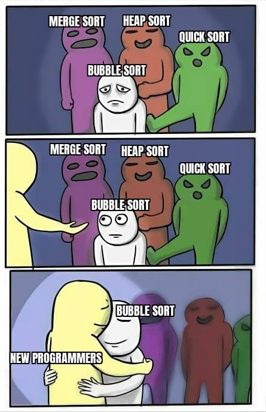
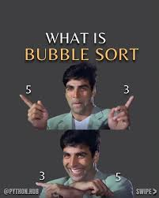
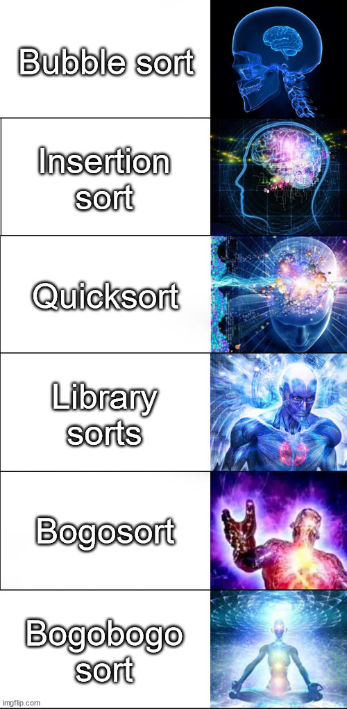

Bubble sort
The most simplest form of sorting algorithm
Works optimal only on small arrays
With each iterations the value moves on top of the array just like a bubble



Code
void bubble sort(int a[],int n){
int pass,i;
for (pass=0;pass < n-1;pass++){
for (i=0;i<n-pass-1;i++){
if (a[i]>a[i+1])
swap(a[i],a[i+1]);
}
}
}
The time complexity for bubble sort is :
its compares every adjacent elements - all n elements , but since it compares 2 elements in the first go itself : n-1
Once the above step reaches the end of the array - one elements [largest,smallest] is sorted , so the next iterations with ignore that [first/ last] element making the second iteration : n-2
So the final time complexity is (n-1)+(n-2)+(n-3)+(n-4)=(n(n-1))/2
that is (n² - n )/ 2 ,
Since n² is larger than n and neglecting the constant "2"
Bubble Sort's Time Complexity : n²
No merge sort is not for begineer - every person who takes birth can sort using merge sort - its not even an algorithm at this points
A step count is the steps per execution i.e the number of times that particular line has been executed in one instance of "program execution" , summation of all the number of executions of these lines in the program would be the step count of that program . The count that we use to determine the time complexity is the operation count